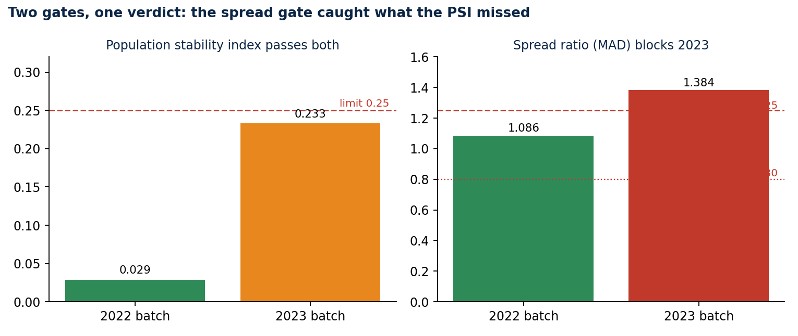
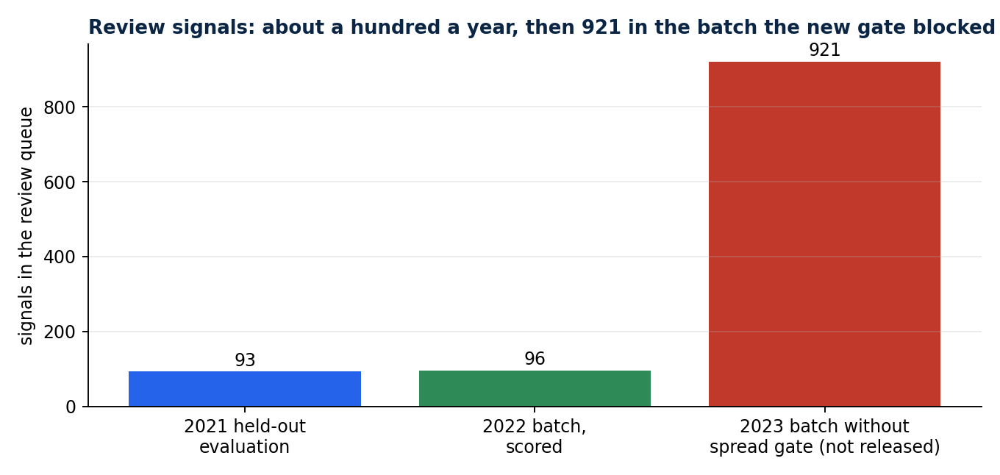
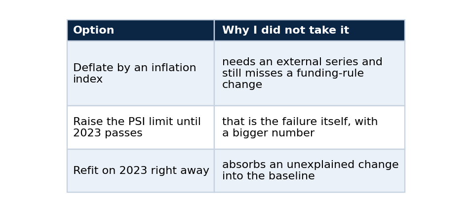

The batch my ML pipeline refused to score
A traceable MLOps pipeline over Brazilian education-finance data, the drift gate that earned its keep, and how to build the same gates
The most useful thing my pipeline did all year was decline to produce an answer.
I had built a review-triage model on public education budget data, and one of its inputs looked fine by every check I had written. It passed. It produced 921 signals, about ten times the rate I had seen on the year before. Only when I looked at what the numbers were doing did I understand that the drift check I trusted had a blind spot, and that the pipeline was about to hand a reviewer a queue full of noise.
This is the story of that batch, the machinery that makes it reproducible, and enough detail that you can build the same two gates for your own model.
The data
My companion project, brazil-public-data-map, publishes lucasrangelss/brazil-education-data-lake on Kaggle. Version 1 holds 27,830 annual municipal declarations to SIOPE, the education budget system run by FNDE, for 2019 through 2023, joined to IBGE municipality codes. The pipeline pins that version by manifest hash and verifies every file before it reads a row.
The model watches one declared value, investment per basic-education student. Nobody audits these declarations and some are implausible, which makes them a fair target for triage and a poor one for anything that pretends to be a verdict. Thirty rows report zero investment per student and are excluded before training. The registry records that count, so the exclusion is visible.
A feature that cannot be fooled by inflation
The raw value is a bad feature. Nominal investment per student rose about 30% from 2022 to 2023, so any fixed threshold would flag growth and little else. The pipeline divides each value by the national median of the same year and takes the log. Later years never inform earlier decisions, so there is no leakage from the future into the baseline.
A robust peer model
Each municipality is compared with peers in the same macro-region and population band (under 10 thousand, 10 to 50 thousand, 50 to 200 thousand, and 200 thousand or more). For each peer group the model stores the median and the median absolute deviation (MAD) of the feature from the training years only. A group with fewer than 30 training rows falls back to the national distribution.
A later declaration becomes a review signal when its robust z-score reaches 3.5 in absolute value:
robust z = 0.6745 x (value - group median) / group MAD signal when |z| >= 3.5
Why MAD and not the standard deviation? A few extreme declarations are exactly what the model exists to find, and they would inflate a standard deviation and hide each other. MAD ignores them, so the scale of "normal" is set by the typical municipality.
A single-group global baseline runs beside the peer model and is stored in the registry. Trained on 2019 and 2020 (11,102 rows in 18 peer groups) and describing 2021, the peer model flagged 93 of 5,566 rows (1.67%), 89 above their peers and 4 below, and the global baseline flagged 15 (0.27%). Trained through 2021 and describing 2022, it flagged 89 (1.60%) against 24 for the baseline. No anomaly labels exist for this data, so these are rates and carry no claim of accuracy.
The run also counts signals below the constitutional 25% education-spending minimum. That was 7 of 93 in 2021, against 1,090 such rows in the year. It is co-occurrence only, since the model never sees the threshold.
Two gates before any scoring
Before it scores a year, the pipeline compares the candidate year with the evaluation year on the relative feature. It checks the schema, the rise in missing values (limit 0.10), the population stability index (limit 0.25), the shift of the median (limit 0.30 in log units), and the spread ratio (limit 1.25 in either direction, so the interval 0.80 to 1.25).
The population stability index compares the shape of two distributions on a common set of bins. This simplified version uses deciles of the reference year:
import numpy as np
def psi(reference: np.ndarray, candidate: np.ndarray, bins: int = 10) -> float:
edges = np.quantile(reference, np.linspace(0, 1, bins + 1))
edges[0], edges[-1] = -np.inf, np.inf
ref = np.histogram(reference, edges)[0] / len(reference)
cand = np.histogram(candidate, edges)[0] / len(candidate)
ref, cand = np.clip(ref, 1e-6, None), np.clip(cand, 1e-6, None)
return float(np.sum((cand - ref) * np.log(cand / ref)))
And the spread gate that I added after the failure is a ratio of median absolute deviations:
def mad(x: np.ndarray) -> float:
return float(np.median(np.abs(x - np.median(x))))
def spread_ratio(reference: np.ndarray, candidate: np.ndarray) -> float:
return mad(candidate) / mad(reference)
# blocked when spread_ratio is outside [0.80, 1.25]
The batch that should not have passed
The 2022 batch passed with a PSI of 0.029 and a spread ratio of 1.086, and the pipeline scored it: 96 review signals, 92 above peers and 4 below.
The 2023 batch is where it got interesting. My first drift check had schema, missingness, PSI and median shift, and nothing about spread. On nominal values it blocked 2023 at a PSI of 0.615, which was the right verdict for the wrong reason, because nominal values had simply grown. After I switched to the relative feature the PSI fell to 0.233, under the 0.25 limit, and 2023 went through with 921 signals.

The PSI passes both batches. The spread ratio of 1.384 blocks 2023.
More than half of those signals, 525 of 921, were Northeast municipalities, and 843 sat above their peers. The median of the relative feature had not moved. Its spread had widened by roughly 38%, and decile PSI barely reacts when a distribution widens symmetrically around a fixed centre.

About a hundred signals a year, and 921 in the batch that the new gate blocked.
The repair was the spread gate on MAD, which the model's own outliers cannot trigger. With it, 2023 is blocked at a spread ratio of 1.384 and the run writes a drift report where the queue would have been.
The data does not say why the spread widened. A change in funding rules is one candidate, though the release holds no evidence for it. Someone should find out before refitting on 2023. Refitting silently would teach the baseline that the new dispersion is normal, and every later signal would inherit that lesson.
Alternatives I rejected, and why

Lineage you can diff
Every registry and queue file records the dataset slug and version, the manifest hash, the data build commit, the code commit, the feature schema, the model ID and the intended use. Each command was run twice into separate folders, and every output file was byte-identical across the two runs. That turns "reproducible" from a claim into a diff. The files embed the code commit, so a run at another commit produces different bytes, which is the point.
The command line accepts a single intended use, review_triage, and refuses allocation, eligibility, sanction, audit-finding and ranking uses by name. Every queue entry carries human_review_required and decision_prohibited. The boundary lives in the interface and not in a paragraph of documentation that nobody reads at 5 p.m.
Run it
python -m pip install -e ".[release]"
python -m education_finance_mlops run-release --train-through-year 2020 --evaluation-year 2021 --score-year 2022 --output artifacts/a-2022
python -m education_finance_mlops run-release --train-through-year 2021 --evaluation-year 2022 --score-year 2023 --output artifacts/a-2023
The second command ends with a drift report and no queue. The release resolver downloads through kagglehub and needs no Kaggle credential for a public dataset. Later dataset versions are not picked up silently: the command requires --dataset-version, and version 1 stays the default pin until a reviewed change chooses another. A run against version 3 of the dataset still blocked 2023 on the same spread ratio of 1.3843.
What I take from it
Monitoring a model on the metric that is easiest to compute is a comfortable habit, and it fails quietly. The PSI on my first feature was low and the batch was still wrong. Changing the feature, noticing that the check no longer covered the failure, and adding a gate for the specific way the distribution changed: that sequence is the work, and I would rather show the record of it than a dashboard that stayed green.
Limits
The pipeline does not identify fraud, evaluate schools or explain policy outcomes. It produces a short queue a person can inspect, and it stops when the data stops resembling its training input. Declared values are not audited. The peer definition ignores rural and urban structure, enrollment mix and funding-rule changes. The thresholds (3.5 for the robust z-score, 1.25 for the spread) were set by convention and not tuned on outcomes, and no uncertainty interval is reported.
Code and links
- education-finance-mlops: the pipeline, the model card and both run records
- brazil-public-data-map: the pinned education release
- Kaggle datasets: the public datasets behind these projects, with schemas and SHA-256 manifests
- GitHub profile: all repositories
My portfolio: https://rangeltech.net